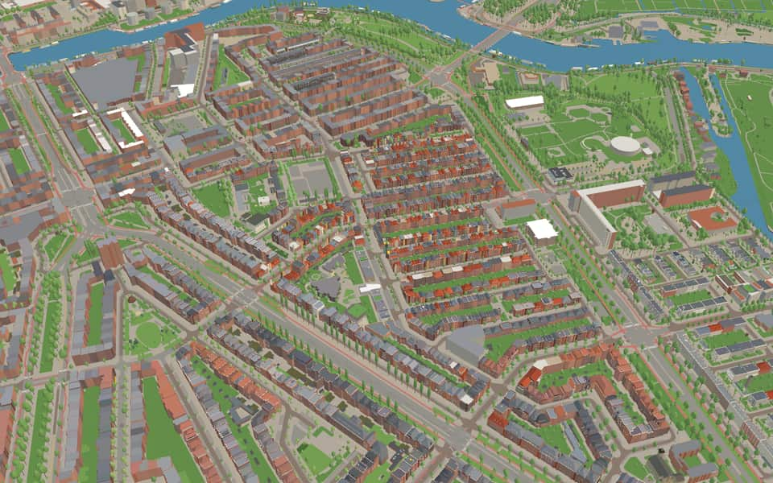
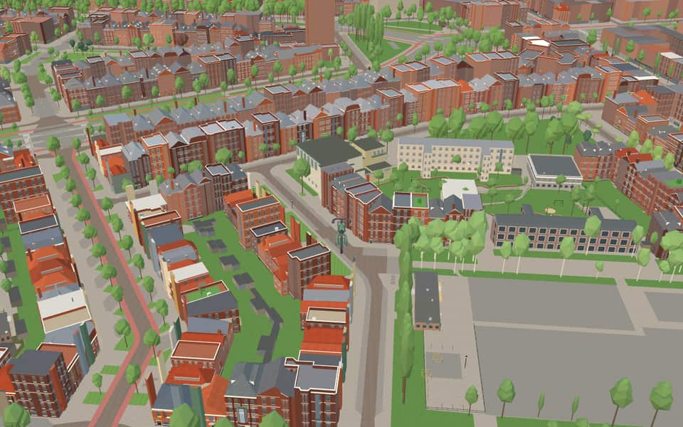
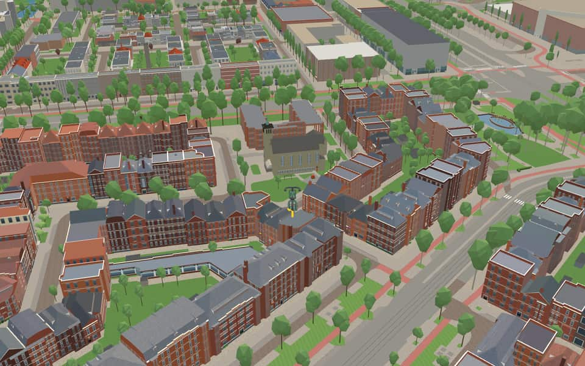
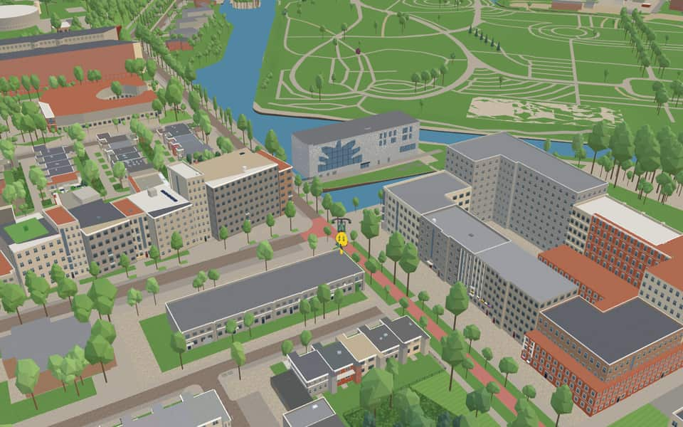

Quarter · Amsterdam
Rivierenbuurt
Rivierenbuurt is a neighbourhood of Amsterdam, Netherlands. The neighbourhood is situated in the eastern part of the Amsterdam borough of Amsterdam-Zuid, bordered by the river Amstel to the east, the Boerenwetering canal in the west, the Amstelkanaal in the north and the A10 motorway in the south. en.wikipedia.org
The name. The Dutch word Rivierenbuurt translates as 'Rivers Neighbourhood'; most streets in the area are named after rivers in the Netherlands. en.wikipedia.org


In the game
Frames from a ride through Rivierenbuurt.




6 more photos of Rivierenbuurt


.jpg){kind=link}


.jpg){kind=link}


Built here
Buildings modelled one by one for the ride.

Anne Frank statue (Merwedeplein)
Photo: Anne Frank, Merwedeplein Amsterdam.JPG (Gus Maussen, CC BY-SA 3.0 nl)
Lekstraatsynagoge
Maarten Lutherkerk
- No picture yet
Mahatma Gandhi statue (Churchill-laan)
LJG Synagogue
- No picture yet
Boterdiepstraat 66 to 36 (16 houses)
- No picture yet
Eemsstraat 36 to 6 (16 houses)
- No picture yet
Boterdiepstraat 34 to 6 (15 houses)
- No picture yet
Hoendiepstraat 34 to 6 (15 houses)
- No picture yet
Boterdiepstraat 35 to 59 (13 houses)
- No picture yet
Boterdiepstraat 9 to 33 (13 houses)
- No picture yet
Hoendiepstraat 13 to 35 (12 houses)
- No picture yet
Hoendiepstraat 5 to 9 (3 houses)

Did you know
Trivia the ride can show you here.
- In the 1920s, a partnership of 71 builders constructed 1,739 homes here. Wikipedia
- Many middle-class Jewish families moved here, seeing it as a step up from the working-class Jodenbuurt. On 3 November 1941 the German occupiers turned the playground on the Gaaspstraat into a market where Jews were required to shop. Wikipedia
- In 1921 the city leased a large plot of expropriated land north-east of the Victorieplein to the Amstels Bouwvereniging, a partnership of 71 builders. They built 1,739 small, poorly made middle-class homes renting for 11 to 20 guilders a week. When the homes were finished in 1925, 16 of the builders could not meet their obligations and the city bought their property. nl.wikipedia.org
- LekstraatsynagogeThe synagogue was inaugurated on November 30, 1937 after plans were completed in 1932. nl.wikipedia.org
- LekstraatsynagogeDuring WWII, Jews could purchase Star of David symbols inside the Lekstraatsynagoge. nl.wikipedia.org
- LekstraatsynagogeFrom 1943, the building stored furniture belonging to deported Jews after closing its doors. nl.wikipedia.org
- LJGMenno ten Brink has served as a rabbi for the community since 1995. nl.wikipedia.org
- LJGThe group manages the Gan Hasjalom cemetery located in Hoofddorp and Amstelveen. nl.wikipedia.org
- Maarten LutherkerkArchitect F Jantzen designed this structure for the Evangelical-Lutheran church. nl.wikipedia.org
- Mahatma GandhiVandals have repeatedly broken off the statue's fragile walking stick and glasses. nl.wikipedia.org
- Samen Spelen Samen LevenNeighbors and local groups funded the artwork after a two-year creation process. nl.wikipedia.org
- EuropapleinTram line 4 operated its terminus here starting in 1948, replacing an earlier route from 1936. nl.wikipedia.org
- EuropapleinAfter reopening in 2011, the square features the Festive series of sculptures by Guillaume Bijl. nl.wikipedia.org
- President KennedylaanResident protests stopped the planned demolition of these Airey houses in the late 1990s. nl.wikipedia.org
3 more facts
- President KennedylaanThe avenue was renamed President Kennedylaan in January 1964 to honor the assassinated American president. nl.wikipedia.org
- President KennedylaanOriginally named Rivierenlaan around 1935, it marked the southern border of the Rivierenbuurt district. nl.wikipedia.org
- VrijheidslaanA wide central lawn originally present here vanished after 1950 when trams began stopping on the right. nl.wikipedia.org
Names on the map
Where the canal, bridge and street names come from.
Canals and water
- Kleine WeteringA wetering is a dug watercourse. Called Kleine (little) Wetering because of its size.
Streets
- AlblasstraatSmall river in the Alblasserwaard.
- AlmstraatThe Alm, a small river in the Land van Altena (Noord-Brabant).
- AmsteldijkA canal dug around 1920 as part of Berlage's Plan Zuid. It connects the river of the same name with a five-way junction of canals, including the Boerenwetering, the Noorder Amstelkanaal and the Zuider Amstelkanaal.
- AmstelkadeA canal dug around 1920 as part of Berlage's Plan Zuid. It connects the river of the same name with a five-way junction of canals, including the Boerenwetering, the Noorder Amstelkanaal and the Zuider Amstelkanaal.
- BaroniepadThe Baronie van Breda, a region between Bergen op Zoom and 's-Hertogenbosch (Noord-Brabant).
- BaroniestraatThe Baronie van Breda, a region between Bergen op Zoom and 's-Hertogenbosch (Noord-Brabant).
- BerkelstraatThe small river that flows into the IJssel near Zutphen.
- BernissestraatIn the Middle Ages a broad stretch of water, and today still a small storage basin (boezemwater) between Voorne and Putten (Zuid-Holland).
- BetuwestraatThe region in Gelderland between the Rijn (Rhine) and the Waal.
- BiesboschstraatThe area of islands, peat flats and creeks between the Bergsche Maas and the Merwede, now partly diked. Before the Delta-werken (Delta Works) were built, it was subject to the tides.
- BorssenburgpleinA former country house on the Amsteldijk, demolished in 1886. Around 1583 it was the country retreat of Jacob Frans Oetgens, who was married to Lysbeth Bors, after whom he named the house.
- BorssenburgstraatA former country house on the Amsteldijk, demolished in 1886. Around 1583 it was the country retreat of Jacob Frans Oetgens, who was married to Lysbeth Bors, after whom he named the house.
80 more streets with a story
- BoterdiepstraatA canal in the province of Groningen.
- Churchill-laanSir Winston L.S. Churchill (1874-1965), English statesman, head of the British war cabinet in 1940-45. One of the Big Three, with Roosevelt and Stalin, to whom we partly owe our liberation. He received the Nobel Prize in Literature in 1953. Churchill is one of the few people honoured with a street name in their lifetime. Before 1946 the street was called Noorder Amstellaan (council decision of 22 March 1922).
- De MirandalaanSalomon (Monne) Rodrigues de Miranda (1875-1942), for 28 years a city councillor for the SDAP, sixteen of them as an alderman of Amsterdam, among other things for public housing. Murdered by the occupiers in a punishment camp.
- DeltastraatA delta is the land at the mouth of a river where it flows into the sea in two or more arms. The word comes from the Greek letter delta, which has the shape of a triangle.
- DeurloostraatOne of the Zeeland sea inlets, at the mouth of the Westerschelde.
- DiezestraatA river in Noord-Brabant formed where the Dommel and the Aa flow together.
- DintelstraatA river in Noord-Brabant that flows into the Volkerak at Dinteloord.
- DongestraatA small river in Noord-Brabant.
- EemlandstraatA region in the north-east of the province of Utrecht, in the basin of the river Eem.
- EemsstraatThe sea inlet between Delfzijl and Germany (the mouth of the river Ems).
- EendrachtstraatThe water between Tholen and Noord-Brabant.
- EuropapleinNamed after the continent. The naming followed the resolution of the Consultative Assembly of the Council of Europe of 29 December 1957, which called on every municipality in Europe to give a square or street the name Europe, to help promote the idea of European unity. With this naming the name Westerscheldeplein (council decision of 30 January 1935) and the name Scheldestraat for part of that street (council decision of 16 February 1927) were abolished.
- GaaspstraatThe small river Gaasp, the part of the Weespertrekvaart that was not dug.
- GaasterlandpadThe southern part of Friesland, between Stavoren and Lemmer. Here are the only places where the Frisian coast does not need dikes to protect it.
- GaasterlandstraatThe southern part of Friesland, between Stavoren and Lemmer. Here are the only places where the Frisian coast does not need dikes to protect it.
- GeleenstraatA small river in South Limburg that flows into the Maas at Stevensweert.
- GeulstraatA small river in South Limburg, a tributary of the Maas. The Geul valley forms part of the border with Belgium.
- GraafschapstraatA much-used name for part of the Achterhoek in Gelderland, originally the old county (graafschap) of Zutphen. Part of the street was renamed Jacob Soetendorpstraat in 1978.
- GrevelingenstraatA sea channel between the islands of Goeree and Schouwen, now closed off from the open sea by the Grevelingendam.
- GriftstraatA dug channel on the Veluwe that flows into the IJssel at Hattem.
- HaringvlietstraatA sea channel from the Hellegatsplein to the North Sea (between Voorne and Zuid-Beveland), now closed off from the open sea by a dam.
- HoendiepstraatA canal in the province of Groningen.
- HogelandpleinThe Hogeland (also written Hoogeland) is the region of the province of Groningen north of the Reitdiep and the Damsterdiep. The name refers to the relatively high ground, caused by silting from the sea; the soil is therefore sea clay.
- HolendrechtstraatA watercourse on the border of Noord-Holland and Utrecht. The Holendrechterweg runs along this water and used to lie entirely in the municipality of Ouder-Amstel. With the annexation of 1966 part of the road came onto Amsterdam territory.
- HunzestraatA small river that rises in Drenthe and widens into the Zuidlaardermeer on the border of the province of Groningen.
- IJselstraatThe river IJssel, a branch of the Rhine, runs from Westervoort to the IJsselmeer.
- JekerstraatA small river that flows into the Maas at Maastricht.
- KinderdijkstraatThe river dike along the Noord, in the Alblasserwaard (Zuid-Holland).
- Korte MeerhuizenstraatA former country house on the Amstel, where the Amstelkade now meets the Amsteldijk, demolished around 1914. In the seventeenth century the poet Hendrik Laurensz Spiegel lived here.
- KrammerstraatThe waterway between Overflakkee and Sint Philipsland.
- KribbestraatA stone dam built across part of a river to guide the current (a groyne).
- Kromme-MijdrechtstraatThe river in Zuid-Holland. Where it joins the Drecht, the Amstel begins. That the street is curved is a coincidence, or a joke by whoever named it.
- KuinderstraatA small river in Friesland, which once flowed into the IJsselmeer at Kuinre.
- LekstraatThe part of the Rhine between Wijk bij Duurstede and Krimpen.
- MaaslandstraatA Zuid-Holland village in the municipality of Midden-Delfland.
- MaasstraatThe river (Meuse) that rises in France and flows through the Netherlands from Maastricht.
- Martin Luther KingparkAmerican preacher (1929-1968), known internationally for his struggle against poverty and discrimination, murdered in Memphis (USA) on 4 April 1968. Before 1968 the park was called Amstelpark (council decision of 19 October 1949), a name later given to another park. The name was changed at the request of the Pacifist Socialist Party (PSP).
- MeerhuizenpleinA former country house on the Amstel, where the Amstelkade now meets the Amsteldijk, demolished around 1914. In the seventeenth century the poet Hendrik Laurensz Spiegel lived here.
- MeerhuizenstraatA former country house on the Amstel, where the Amstelkade now meets the Amsteldijk, demolished around 1914. In the seventeenth century the poet Hendrik Laurensz Spiegel lived here.
- MerwedepleinThe river formed where the Maas and the Waal flow together.
- MoerdijkstraatA spot on the Hollandsch Diep where Johan Willem Friso drowned in 1711. The Moerdijk railway bridge (2530 m) was built here between 1868 and 1872, and the road bridge in 1936.
- MolenbeekstraatThe name of several Dutch watercourses, among them ones in Limburg and along the Veluwezoom.
- MontferlandstraatThe hilly country near 's-Heerenberg and Zeddam (Gelderland).
- NiersstraatA river in Limburg that flows into the Maas at Gennep.
- OldambtstraatThe eastern part of the province of Groningen. 'Old' is the northern and eastern Dutch form of 'oud' (old); 'ambt' or 'ambacht' means administrative district.
- Oude-IJselstraatThe Oude IJssel is a tributary of the IJssel.
- PeelstraatA region on the border of Noord-Brabant and Limburg, originally a poor area of heath and peat, now entirely cultivated. The last bit of the Peel survives as a nature reserve, the Grote Peel.
- President KennedylaanJohn Fitzgerald Kennedy (1917-1963), 35th president of the United States from 1961, whose short term was marked by a firm approach, murdered in Texas on 22 November 1963. Before 1964 the avenue was called Rivierenlaan.
- President KennedyplantsoenJohn Fitzgerald Kennedy (1917-1963), 35th president of the United States from 1961, whose short term was marked by a firm approach, murdered in Texas on 22 November 1963. Before 1964 the avenue was called Rivierenlaan.
- ReggestraatA tributary of the Overijsselse Vecht.
- ReitdiepstraatA canal between the city of Groningen and Zoutkamp.
- RijnstraatThe river (Rhine) that rises in Switzerland and enters the Netherlands at Lobith.
- RoerstraatA river (the Rur) that rises in the Eifel and flows into the Maas at Roermond.
- RoompotstraatA channel in the mouth of the Oosterschelde, along the coast of Walcheren.
- RooseveltlaanFranklin Delano Roosevelt (1882-1945), president of the United States from 1933, of a Dutch family that emigrated to America in 1649. Partly through his fierce opposition to American neutrality, he had a large share in the Allied victory in the Second World War. When the street was laid out it was named Zuider Amstellaan (council decision of 22 March 1922).
- SallandstraatOne of the three quarters of Overijssel, between Gramsbergen and Deventer; the others are Twente and Vollenhove.
- ScheldepleinThe river (Scheldt) that rises in France, enters the Netherlands beyond Antwerp and then flows into the sea through the Westerschelde.
- ScheldestraatThe river (Scheldt) that rises in France, enters the Netherlands beyond Antwerp and then flows into the sea through the Westerschelde.
- SchipbeekstraatA shipping canal dug in the fifteenth century and extended in later centuries, on the border of Gelderland and Overijssel, which joins the IJssel at Deventer.
- SlaakstraatA stretch of water between Sint Philipsland and Noord-Brabant, dammed in 1884.
- SlingerbeekstraatA stream in the Gelderland Achterhoek that flows into the Oude IJssel at Doetinchem.
- SloestraatA former tidal channel between Walcheren and Zuid-Beveland, now entirely reclaimed.
- StichtstraatThe name for the whole secular territory of the Bishop of Utrecht, which ran from Bodegraven up to and including the city of Groningen; Amstelland also belonged to it. Later the term narrowed to today's province of Utrecht.
- TrompenburgstraatA former country estate on the Amstel, named after its owner at the time, the admiral Cornelis Tromp. After his death in 1691 the burgomaster Nicolaas Witsen moved in. In the early twentieth century the Spyker car factory and then the Nestelroy-Trompenburg paper mill were based here. The street was originally called Trompstraat (council decision of 21 December 1899).
- TwentestraatThe eastern part of the province of Overijssel.
- UiterwaardenstraatThe land along the rivers between the summer and winter dikes, which floods in winter (floodplains).
- UithoornstraatThe Noord-Holland town of Uithoorn is named here because the Uithoorn barge skipper moored on the Amsteldijk level with this street.
- VechtstraatThe river that flows into the IJsselmeer at Muiden.
- VeluwelaanThe part of the province of Gelderland between the Gelderse Vallei and the Gelderse IJssel.
- VictoriepleinThe square was given this name in 1946 to mark the victory of the Allied countries. Before that it was called Daniël Willinkplein, after the poet (1676-1722) known for his Amstellandsche Arcadia (council decision of 22 March 1922).
- VolkerakstraatThe water between Overflakkee and Noord-Brabant, closed off from the Haringvliet and the Hollands Diep by a dam in 1970 (Hellegatsplein).
- VrijheidslaanThis avenue, originally called Amstellaan, was renamed Stalinlaan after the Second World War, after the Soviet leader Joseph Stalin, because the Soviet Union had brought about our liberation together with the Allies. After the Russian intervention in the Hungarian uprising of 1956 the name was changed to Vrijheidslaan (freedom avenue).
- WaalstraatA branch of the Rhine from Nijmegen to Gorinchem, after which it joins the Maas and is called the Merwede.
- WaverstraatA small river on the border of Noord-Holland and Utrecht.
- WesterwoldestraatA region in the south-east of the province of Groningen.
- WielingenstraatThe channel in the mouth of the Westerschelde.
- WinterdijkstraatThe outer river dike, the bandijk, that bounds the river bed in winter and spring.
- ZomerdijkstraatA zomerdijk (summer dike) is the low dike or embankment right beside the river bed, which bounds the river in summer, at low water.
- ZoomstraatA small river in Noord-Brabant, by Bergen op Zoom.
- Zuidelijke WandelwegOriginally laid out as a promenade between the Amsteldijk and the Amstelveenseweg. Parallel to it, but further outside the pre-1940 built-up area, ran the Buitenveldertse Wandelweg, which disappeared when the Buitenveldert garden suburb was built. The surviving remnant of the Zuidelijke Wandelweg shares only the name; it is no longer a footpath in character.